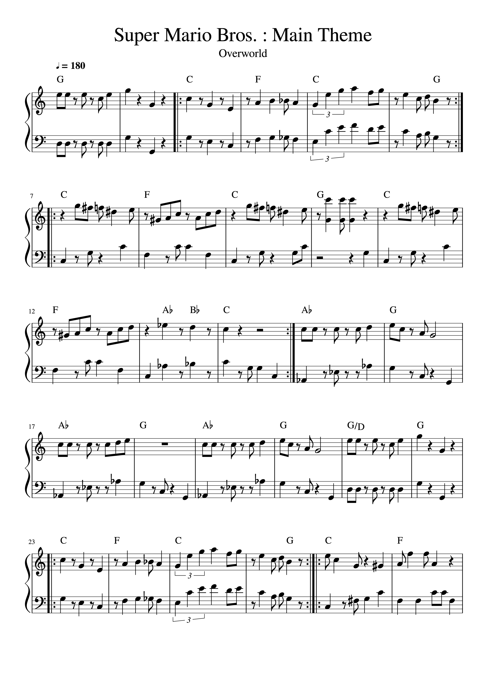

Lesson 3
Play Your First Song!
Lets start by put everything together by learning a simple beginner melody.
This page is meant to help you practice reading notes on the treble staff and matching them to piano keys.

Lets start by put everything together by learning a simple beginner melody.
Spend 10 minutes finding Middle C and playing the C Major scale.